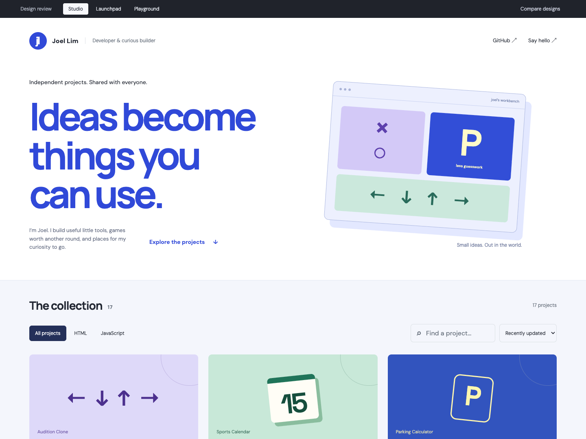
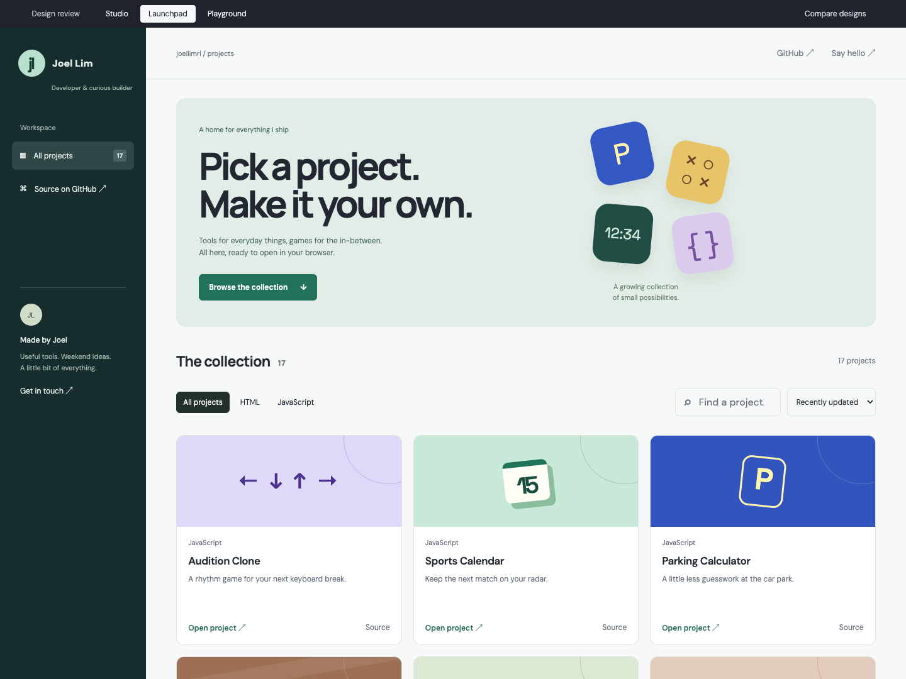
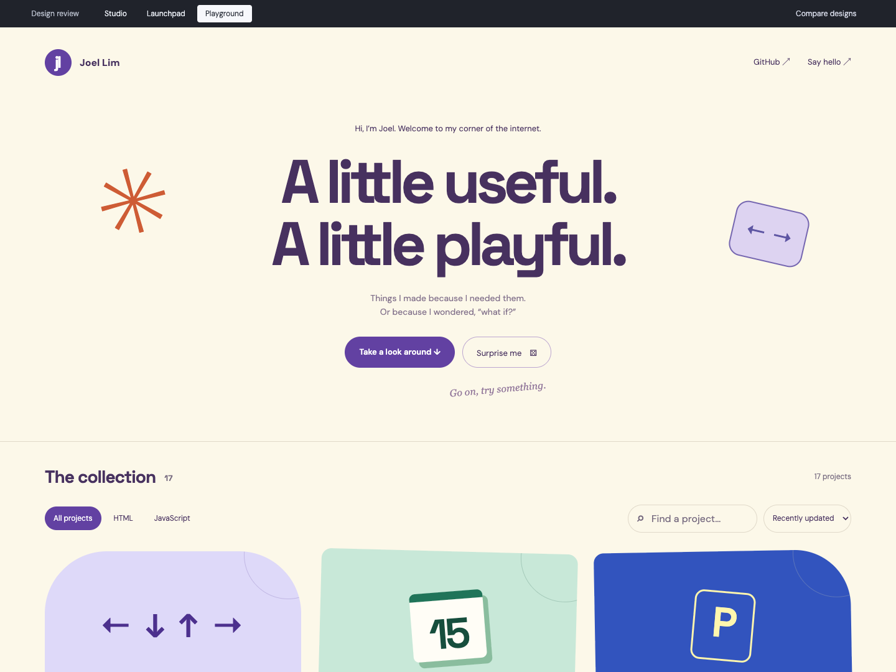

Studio
A confident personal portfolio. Big blue typography, space to breathe, and projects with a strong visual presence.
Explore Studio ↗Three working prototypes built around your actual projects. Explore each direction, try the filters, and see what feels like you.

A confident personal portfolio. Big blue typography, space to breathe, and projects with a strong visual presence.
Explore Studio ↗
An app library built for a growing collection. Compact cards and clear navigation make the next useful tool easy to find.
Explore Launchpad ↗
A more personal corner of the internet. Playful shapes, little surprises, and a collection that invites exploration.
Explore Playground ↗All three discover your public repositories with GitHub Pages enabled. New projects appear on the next successful refresh, with no list to edit. Search, language filters, sorting, real project links, and a saved fallback work in every version.
These are local review prototypes; your current homepage is unchanged. The project illustrations are visual identities, not screenshots. Read the automatic discovery approach, including deployment checks and custom domains for the production version.